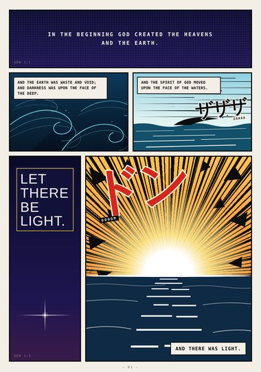
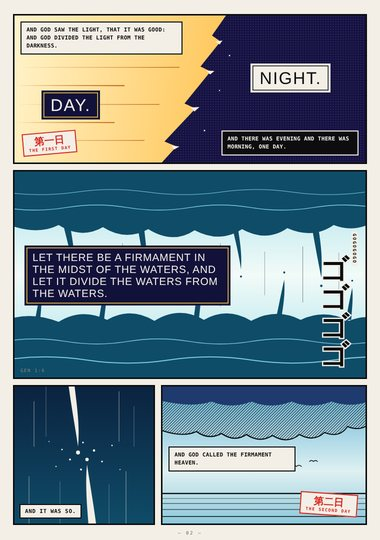
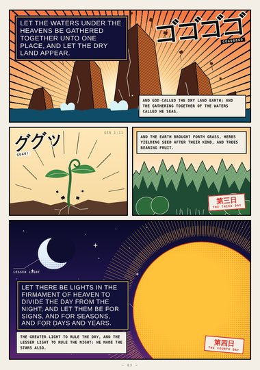
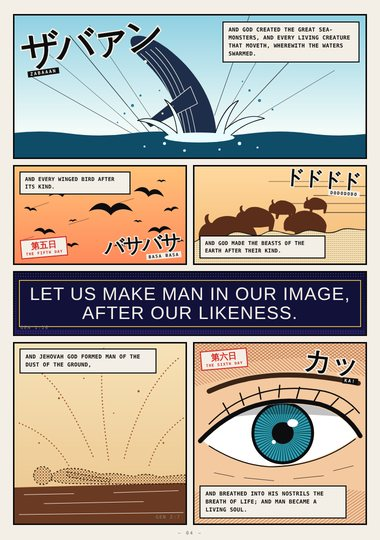
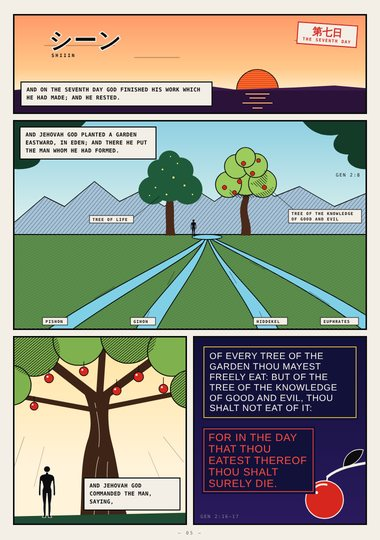
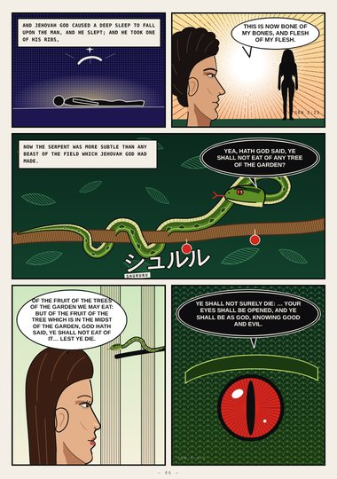
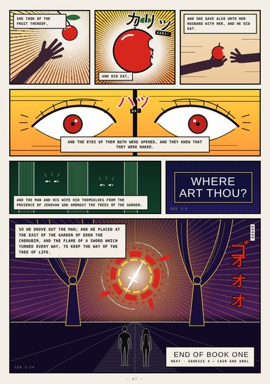

Genesis (digest) · Book One · Genesis 1–3
The Beginning
Creation in seven days, the garden of Eden, the serpent, and the way east of Eden.
Digest edition: an early, abridged first draft (highlights only). The full edition is replacing it.
Start reading ›Pages
 CoverCoverGenesis 1–3
CoverCoverGenesis 1–3
Page 1Let There Be LightGenesis 1:1–3
Page 2Day and FirmamentGenesis 1:4–8
Page 3Land, Seed, LightsGenesis 1:9–19
Page 4Living Things and ManGenesis 1:20 – 2:7
Page 5Rest and EdenGenesis 2:2–17
Page 6The Woman and the SerpentGenesis 2:21 – 3:5
Page 7The FallGenesis 3:6–24